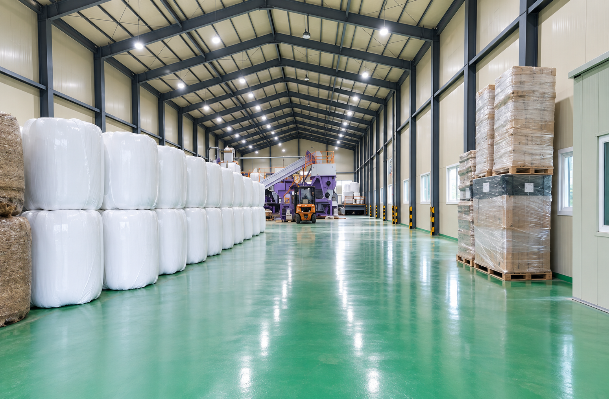
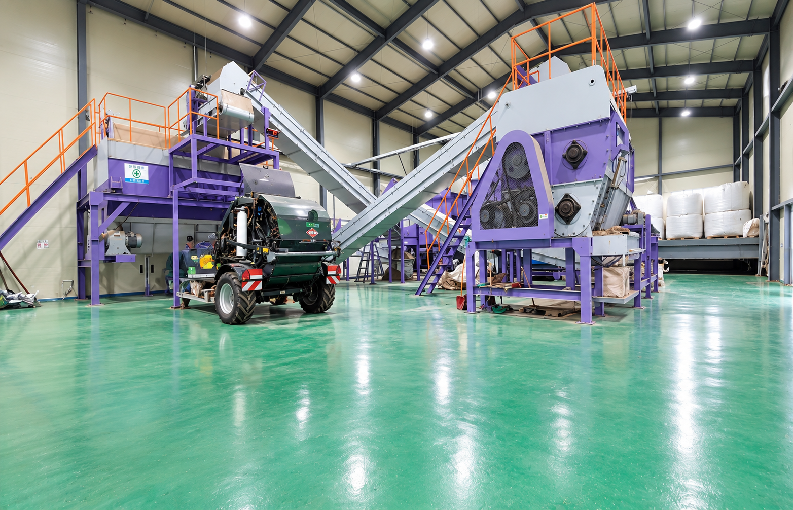
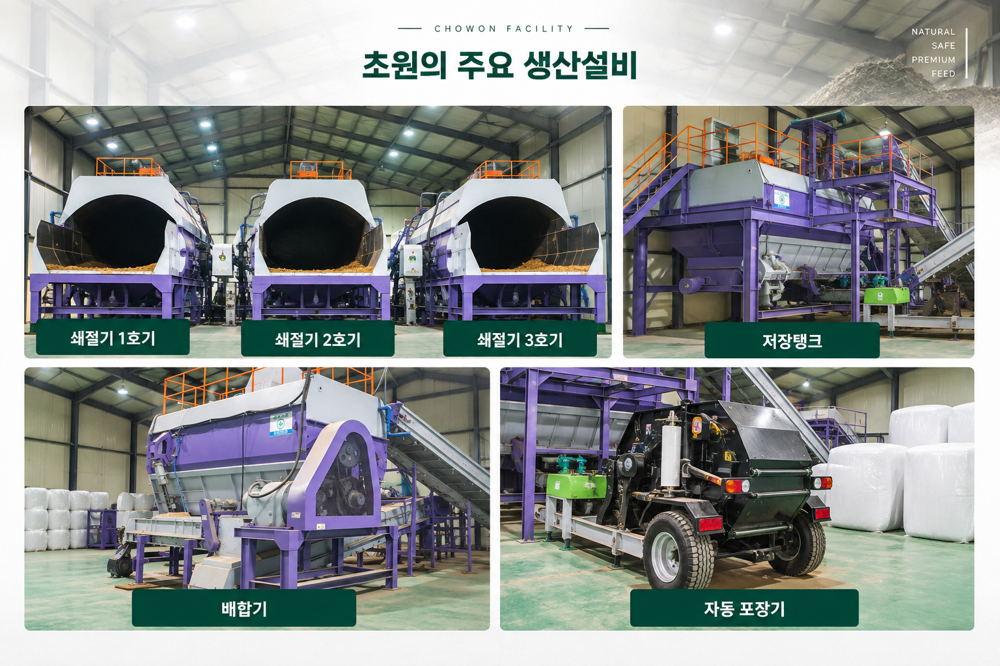

생산시설
실제 생산현장과 주요 설비를 통해 초원의 생산공정을 소개합니다.
공장소개
체계적인 생산환경에서
체계적인 생산환경에서
좋은 조사료를 만듭니다.
초원은 혼합조사료의 생산부터 공급까지
안정적인 생산환경을 구축하고 있습니다.

생산현장
체계적인 공정으로 완성되는
체계적인 공정으로 완성되는
혼합조사료
쇄절, 배합, 이송, 저장, 포장으로 이어지는 생산설비를 통해 혼합조사료를 생산하고 있습니다.

주요 생산설비
혼합조사료 생산을 위한
혼합조사료 생산을 위한
주요 생산설비
쇄절기, 배합기, 저장탱크, 자동 포장기 등 혼합조사료 생산에 필요한 주요 설비입니다.
